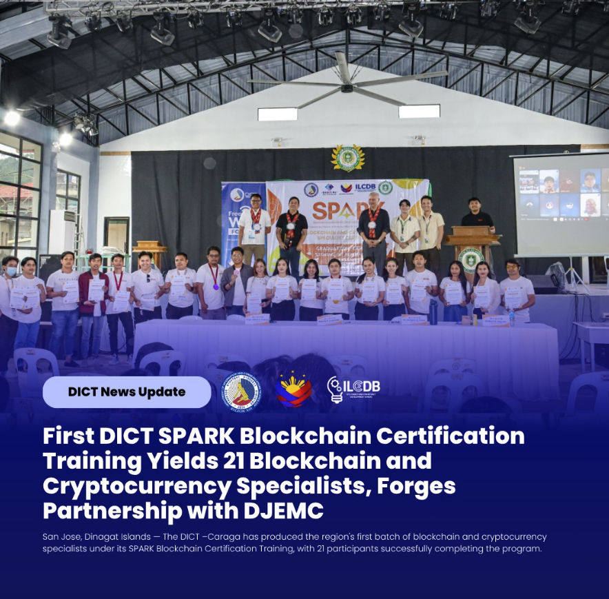
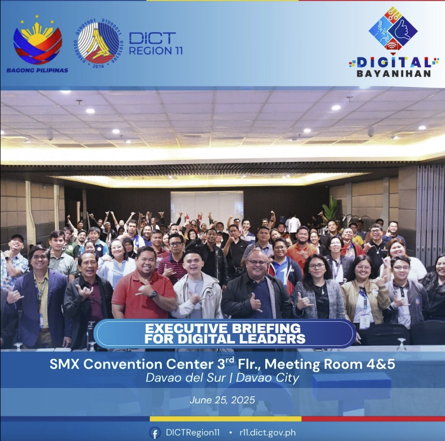
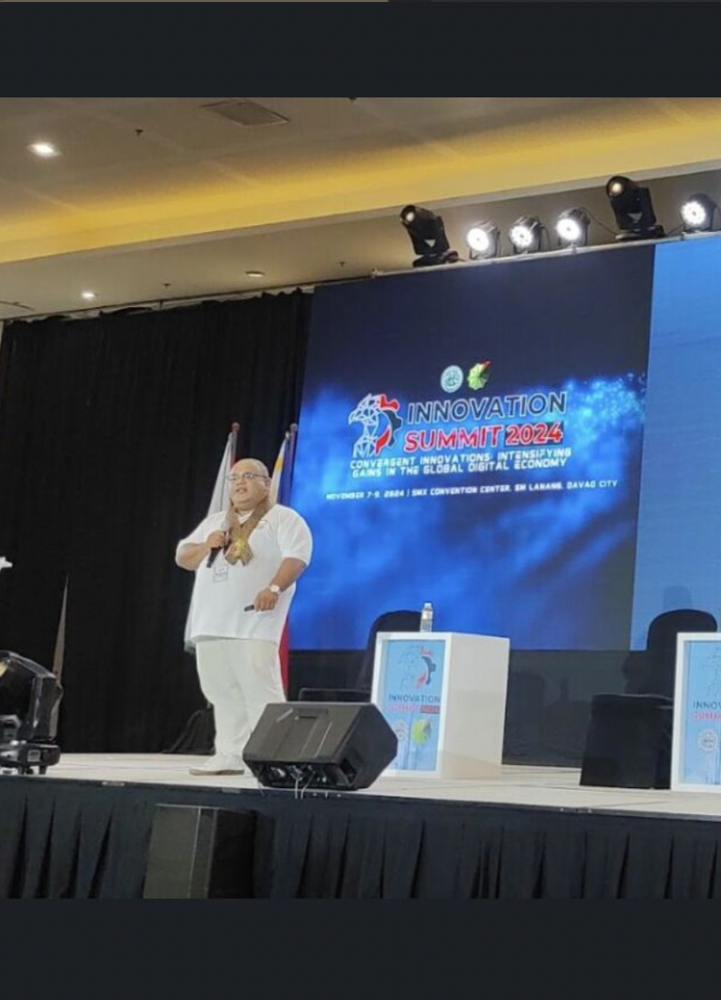
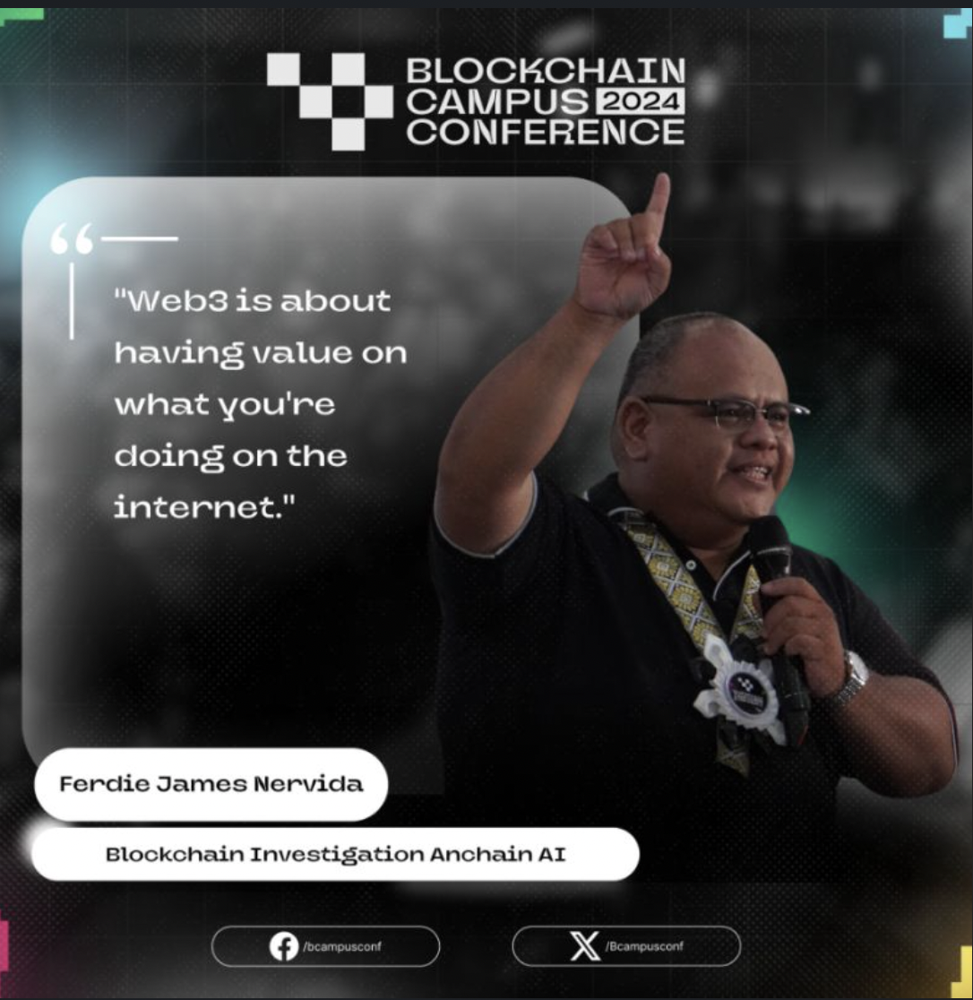
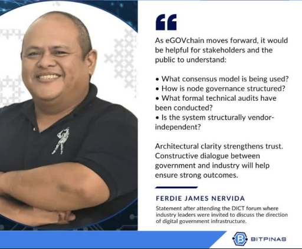
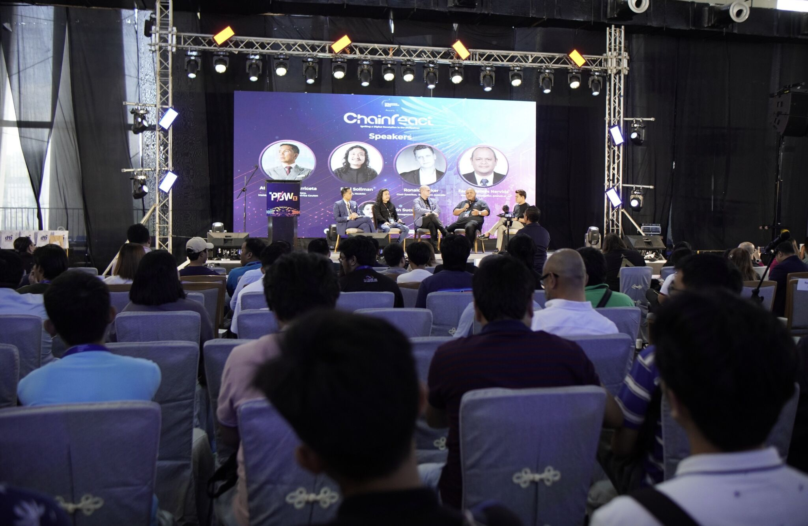
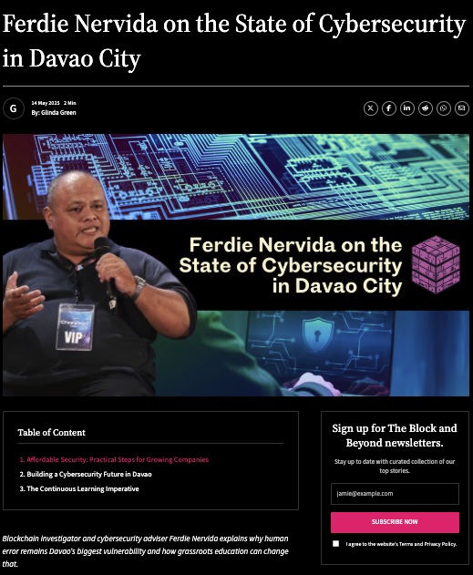
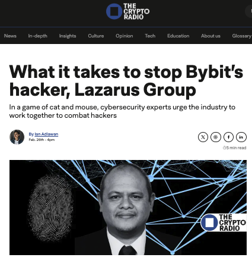
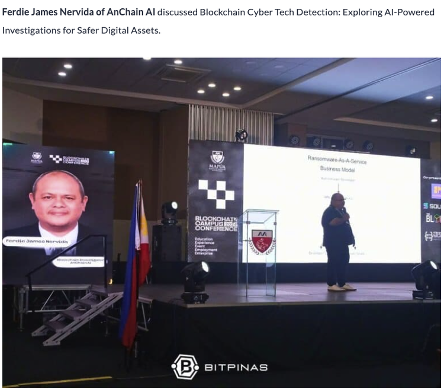

Expert Analysis & Industry Insights
Read my latest articles on blockchain forensics, cryptocurrency investigations, cybersecurity trends, and regulatory developments in the Asia Pacific region.
Industry Analysis
Forensics Techniques
Asia Pacific Focus
Trusted by Leading Organizations
Featured in major media outlets and trusted by government agencies across the Philippines.
Recent Engagements
Blockchain for Digital Workforce Info Session
Online via Zoom
DICT Davao de Oro successfully hosted the Information Session on "Blockchain for the Digital Workforce" engaging 196 participants across government, private sector, and academia—uniting stakeholders to advance digital readiness.

DICT SPARK Blockchain & Cryptocurrency Specialist Certification
Hybrid, Dinagat Islands & Philippines Online
First DICT SPARK Blockchain Certification Training yields 21 Blockchain and Cryptocurrency Specialists, forging partnership with DJEMC. Week-long hybrid training covering blockchain technology, DeFi, NFTs, and cybersecurity.

Blockchain and Fintech for Digital Leaders
SMX Convention Hall, Davao City
DICT Executive Briefing for Digital Government Leaders discussing emerging technologies in shaping smarter governance—from digital identity to secure data systems powered by blockchain, AI, IoT, 5G, and cybersecurity.

Davao Chamber Innovation Summit 2024
SMX Convention Center, Davao City
Featured speaker on blockchain and the future of payments for the business sector. Key insight: True innovation isn't about reinventing the wheel—it's about making technology inclusive, lifting everyone toward a shared future.

Blockchain Campus Conference
Mapúa Malayan Colleges Philippines
Featured speaker on Blockchain, Web3, Cybersecurity and the future of AI. "Blockchain Cyber Tech Detection: Exploring AI-Powered Investigations for Safer Digital Assets."

BitPinas Feature on DICT Blockchain Consultation
BitPinas • March 10, 2026
Featured in BitPinas following participation in the DICT blockchain consultation meeting, which brought together industry voices on standards, architecture, and practical direction for blockchain adoption in the Philippines.

Philippine Blockchain Week
Davao City, Philippines
Blockchain Cyber Tech Detection: Exploring AI-Powered Investigations for Safer Digital Assets. Expert insights on securing digital assets through advanced blockchain forensics and AI-powered detection systems.
Featured In

The Block and Beyond
"Grassroots advocacy in cybersecurity - human error is Davao City's biggest cyber threat"

The Crypto Radio
"Lazarus Group's Bybit hack and industry collaboration to combat crypto threats"

BitPinas
"AI-powered blockchain forensics at Blockchain Campus Conference"